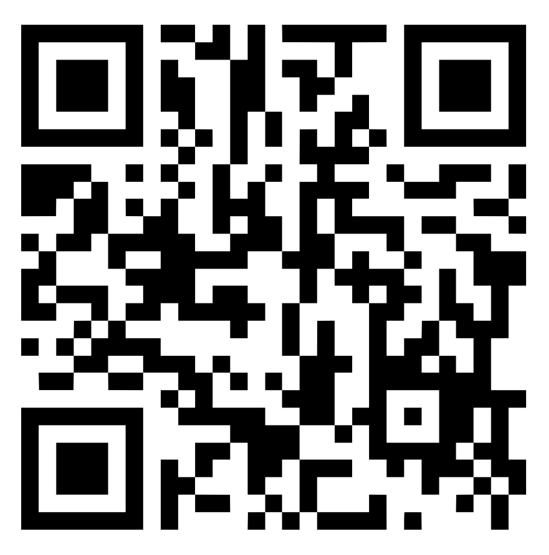

We hebben een gastspreker uitgenodigd die al enkele jaren zeer intensief bezig is met het ontwikkelen van een opsporingsmethode voor borstkanker. Dat heeft medische en technische aspecten, maar in de praktijk blijken er heel meer vraagstukken naar boven te komen (macht, cultuur, gender, haalbaarheid, …).
Op dit moment wordt borstkanker opgespoord met een test die heel vervelend is voor vrouwen, niet werkt voor vrouwen onder 50 en regelmatig de verkeerde diagnose stelt. Er overlijen in Nederland gemiddeld twee jonge vrouwen per dag aan de gevolgen van borstkanker. Dat aantal kan heel naar beneden als er betrouwbare, makkelijke test zou zijn die jonge vrouwen op prettige manier de kans geeft zich regelmatig te laten controleren.
Tom Sanders zal voor iedereen begrijpelijk uitleggen hoe de Early Warning Scan werkt. Hij zal ook uitleggen welke problemen hij is tegengekomen nadat het idee was uitgewerkt.
Het programma start om 14:30 en duur tot even na vijf uur. Heb jij het zesde uur een gewone les, dan kan daar vrijstelling voor gevraagd worden. Ook een eventueel KWT tijdens 7e uur vervalt als nodig.
Het bedenken, ontwikkelen, testen en ingevoerd krijgen van iets als de Early Warning Scan vraagt om heel veel verschillende kennis en vaardigheden. Dit project laat je vakoverstijgend werken aan praktische problemen zoals je ze na school zult tegenkomen. De vakken die je leuk vindt, bijvorbeeld Biologie, Econmomie, Maatschappijwetenschappen of Informatica, worden leuker als je erover nadenkt in bredere context. Dat is precies wat we deze middag gaan doen.
Ben je geïnteresseerd in geneeskunde? Of in positie van vrouw in onze maatschappij? Wil je ooit een bedrijf rondom een eigen idee starten? Dan zijn ook aspecten die aan de orde gaan komen.
Zoek je nog een onderwerp voor een PWS volgend jaar (of het jaar erna), ook al een super goede reden om mee te doen.
Hou je van tekenen of het schrijven van wervende tekst? Ook dat soort vaardigheden zijn nodig om een goed idee werkelijkheid te laten worden.
Kortom: geef je op via het formulier achter de QR-code
a>